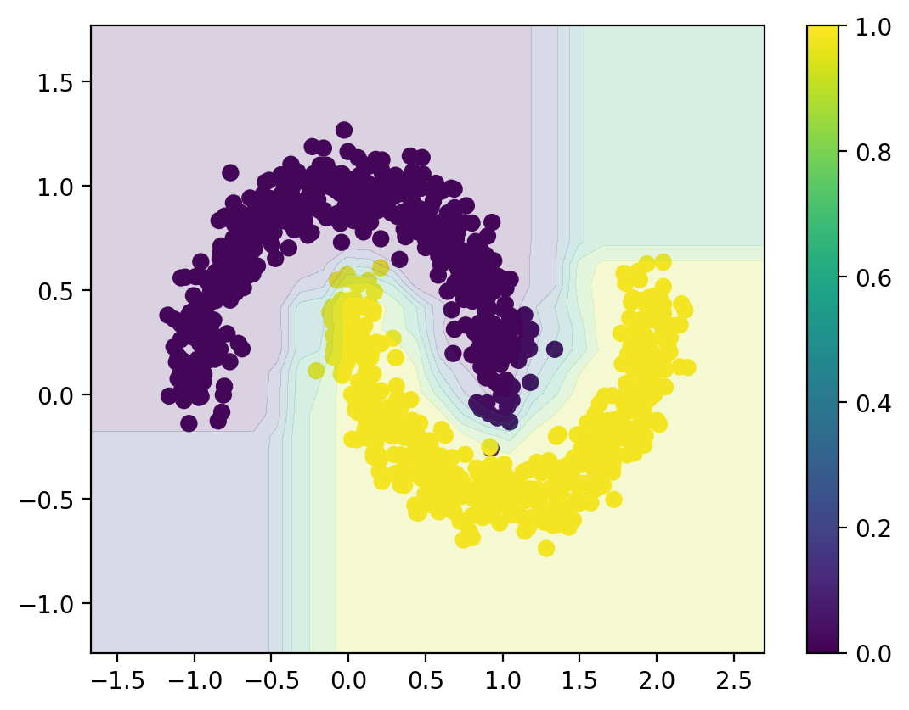
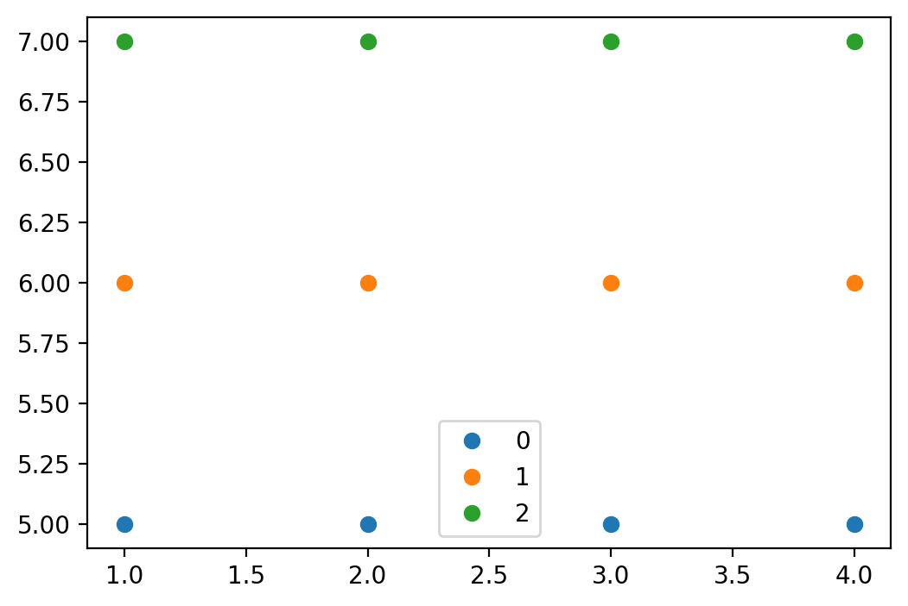
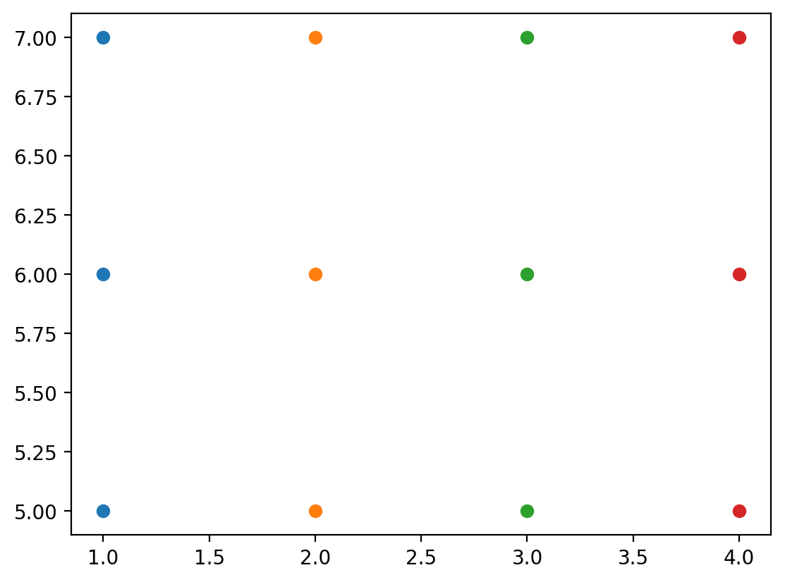
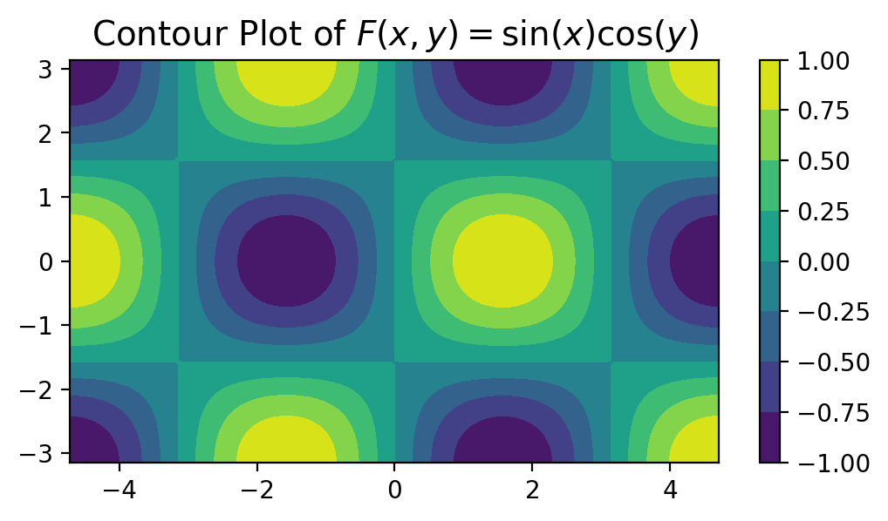
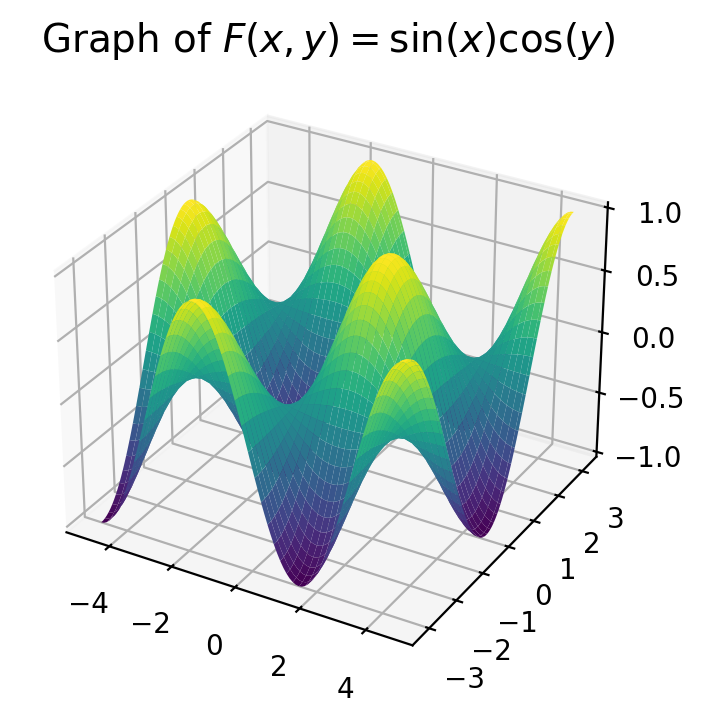
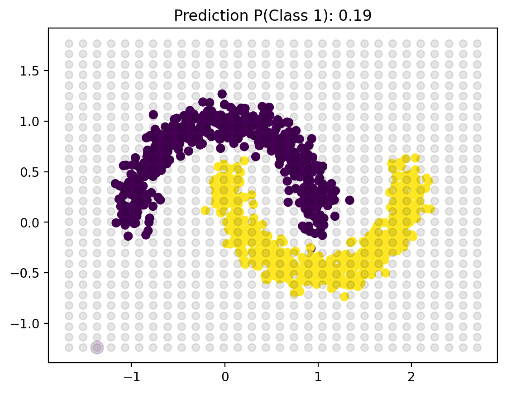
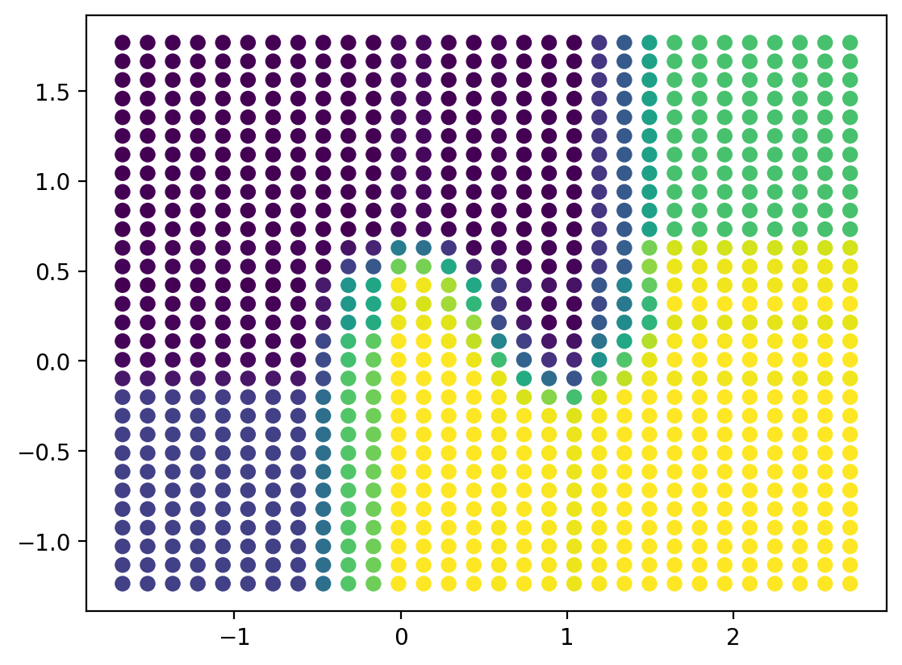
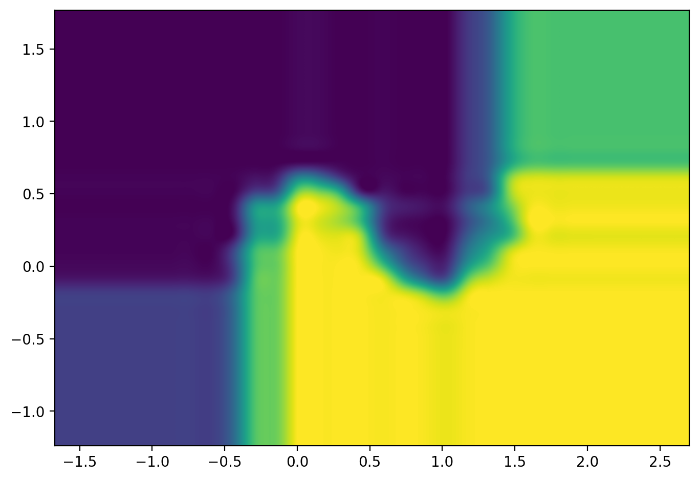
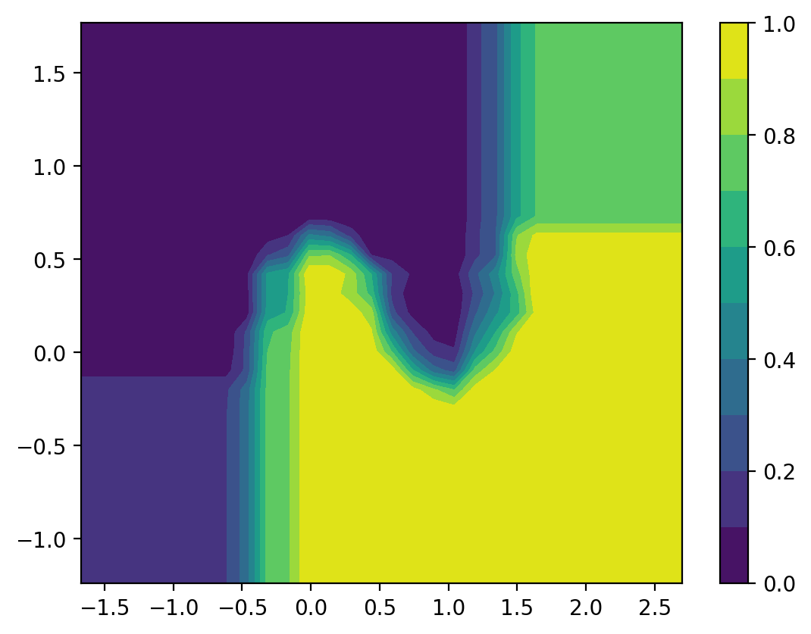

import numpy as np
import matplotlib.pyplot as plt
import pandas as pd
# from latexify import latexify
# latexify(columns = 2)
%matplotlib inline
%config InlineBackend.figure_format = "retina"Meshgrid
ML
import ipywidgets as widgets
from ipywidgets import interactivefrom sklearn.datasets import make_moons
X, y = make_moons(n_samples = 1000, noise = 0.1, random_state = 0)
plt.figure(figsize = (8, 6))
plt.scatter(X[:, 0], X[:, 1], c = y, s = 40, cmap = plt.cm.Spectral);
plt.show()
from sklearn.ensemble import RandomForestClassifier
rf = RandomForestClassifier(n_estimators = 100, random_state = 0)
rf.fit(X, y)RandomForestClassifier(random_state=0)In a Jupyter environment, please rerun this cell to show the HTML representation or trust the notebook.
On GitHub, the HTML representation is unable to render, please try loading this page with nbviewer.org.
RandomForestClassifier(random_state=0)
# Decision surface
plt.figure(figsize = (8, 6))
plt.scatter(X[:, 0], X[:, 1], c = y, s = 40, cmap = plt.cm.viridis)
ax = plt.gca()
xlim = X[:, 0].min() - 0.5, X[:, 0].max() + 0.5
ylim = X[:, 1].min() - 0.5, X[:, 1].max() + 0.5
# Create grid to evaluate model
x_lin = np.linspace(xlim[0], xlim[1], 30)
y_lin = np.linspace(ylim[0], ylim[1], 30)
XX, YY = np.meshgrid(x_lin, y_lin)
xy = np.vstack([XX.ravel(), YY.ravel()]).T
Z = rf.predict_proba(xy)[:, 1].reshape(XX.shape)
# Plot decision boundary
ax.contourf(XX, YY, Z, cmap = plt.cm.viridis, alpha = 0.2)
plt.colorbar()
plt.show()
X_arr = np.array([1, 2, 3, 4])
Y_arr = np.array([5, 6, 7])
XX, YY = np.meshgrid(X_arr, Y_arr)XXarray([[1, 2, 3, 4],
[1, 2, 3, 4],
[1, 2, 3, 4]])YYarray([[5, 5, 5, 5],
[6, 6, 6, 6],
[7, 7, 7, 7]])XX.shape, YY.shape((3, 4), (3, 4))out = {}
count = 0
for i in range(XX.shape[0]):
for j in range(XX.shape[1]):
count = count + 1
out[count] = {"i": i, "j": j, "XX": XX[i, j], "YY": YY[i, j]}pd.DataFrame(out).T| i | j | XX | YY | |
|---|---|---|---|---|
| 1 | 0 | 0 | 1 | 5 |
| 2 | 0 | 1 | 2 | 5 |
| 3 | 0 | 2 | 3 | 5 |
| 4 | 0 | 3 | 4 | 5 |
| 5 | 1 | 0 | 1 | 6 |
| 6 | 1 | 1 | 2 | 6 |
| 7 | 1 | 2 | 3 | 6 |
| 8 | 1 | 3 | 4 | 6 |
| 9 | 2 | 0 | 1 | 7 |
| 10 | 2 | 1 | 2 | 7 |
| 11 | 2 | 2 | 3 | 7 |
| 12 | 2 | 3 | 4 | 7 |
XX[0], YY[0](array([1, 2, 3, 4]), array([5, 5, 5, 5]))plt.figure(figsize = (6, 4))
for i in range(XX.shape[0]):
plt.plot(XX[i], YY[i], 'o', label=i)
plt.legend();
plt.figure(figsize = (6, 4))
plt.plot(XX, YY, 'o')
plt.show()
Let’s see some Plots and their Contours
- \[ \color{red}{F(x, y) = \sin(x)\cos(y)}, -\frac{3\pi}{2} \le x \le \frac{3\pi}{2}, -\pi \le y \le \pi \]
from mpl_toolkits.mplot3d import Axes3D
X1 = np.linspace(-3/2 * np.pi, 3/2 * np.pi, 100)
Y1 = np.linspace(-np.pi, np.pi, 100)
XX1, YY1 = np.meshgrid(X1, Y1)
F = np.sin(XX1) * np.cos(YY1)
plt.figure(figsize=(6, 3))
plt.contourf(XX1, YY1, F, cmap = "viridis")
plt.colorbar()
plt.title(r"Contour Plot of $F(x, y) = \sin(x)\cos(y)$", fontsize = 14)
plt.show()
fig = plt.figure(figsize=(8, 4))
ax4 = fig.add_subplot(111, projection = "3d")
ax4.plot_surface(XX1, YY1, F, cmap = "viridis")
ax4.set_title(r"Graph of $F(x, y) = \sin(x)\cos(y)$", fontsize = 14)
plt.show()

xlim = X[:, 0].min() - 0.5, X[:, 0].max() + 0.5
ylim = X[:, 1].min() - 0.5, X[:, 1].max() + 0.5
# Create grid to evaluate model
x_lin = np.linspace(xlim[0], xlim[1], 30)
y_lin = np.linspace(ylim[0], ylim[1], 30)x_linarray([-1.67150293, -1.52070662, -1.36991031, -1.219114 , -1.06831769,
-0.91752137, -0.76672506, -0.61592875, -0.46513244, -0.31433613,
-0.16353982, -0.01274351, 0.1380528 , 0.28884911, 0.43964542,
0.59044173, 0.74123804, 0.89203435, 1.04283066, 1.19362697,
1.34442328, 1.49521959, 1.6460159 , 1.79681221, 1.94760852,
2.09840483, 2.24920114, 2.39999745, 2.55079376, 2.70159007])XX, YY = np.meshgrid(x_lin, y_lin)def update_plot(i = 0, j = 2):
x_point = XX[i, j]
y_point = YY[i, j]
plt.figure(figsize = (8, 6))
plt.plot(XX, YY, 'o', alpha = 0.1, color = 'k')
plt.scatter(X[:, 0], X[:, 1], c=y, s=40, cmap=plt.cm.viridis)
pred = rf.predict_proba([[x_point, y_point]])[:, 1]
plt.scatter(x_point, y_point, s = 100, c = "r")
plt.title(f"Prediction P(Class 1): {pred[0]:.2f}")
plt.show()
update_plot(0, 0)
widget = interactive(update_plot, i = (0, XX.shape[0] - 1), j = (0, XX.shape[1] - 1))
display(widget)XX[0], YY[:, 0](array([-1.67150293, -1.52070662, -1.36991031, -1.219114 , -1.06831769,
-0.91752137, -0.76672506, -0.61592875, -0.46513244, -0.31433613,
-0.16353982, -0.01274351, 0.1380528 , 0.28884911, 0.43964542,
0.59044173, 0.74123804, 0.89203435, 1.04283066, 1.19362697,
1.34442328, 1.49521959, 1.6460159 , 1.79681221, 1.94760852,
2.09840483, 2.24920114, 2.39999745, 2.55079376, 2.70159007]),
array([-1.23673767, -1.13313159, -1.02952551, -0.92591943, -0.82231335,
-0.71870727, -0.61510119, -0.51149511, -0.40788903, -0.30428295,
-0.20067687, -0.09707079, 0.00653529, 0.11014137, 0.21374745,
0.31735353, 0.42095961, 0.52456569, 0.62817177, 0.73177785,
0.83538393, 0.93899001, 1.04259609, 1.14620217, 1.24980825,
1.35341433, 1.45702041, 1.56062649, 1.66423257, 1.76783865]))XX.shape(30, 30)from einops import rearrange, repeat, reduceUsually when dealing with images, the shapes are of the form \((B \times C \times H \times W)\) where
\(B\): Batch Size
\(C\): Number of Image Channels
\(H\): Image Height
\(W\): Image Width
Inorder to flatten the image data into a linear array \((B \times C \times H \times W) \to (B \times C \cdot H \cdot W)\), we may use
\[ \texttt{einops.rearrange(img, "b c h w -> b (c h w)")} \]
XX.shape(30, 30)XX.ravel().shape(900,)rearrange(XX, 'i j -> (i j) 1').shape, rearrange(XX, 'i j -> (i j)').shape((900, 1), (900,))rearrange(YY, 'i j -> (i j) 1').shape(900, 1)XX_flat = rearrange(XX, 'i j -> (i j) 1')
YY_flat = rearrange(YY, 'i j -> (i j) 1')np.array([XX_flat, YY_flat]).shape(2, 900, 1)rearrange([XX_flat, YY_flat], 'f n 1 -> n f').shape(900, 2)X_feature = rearrange([XX_flat, YY_flat], 'f n 1 -> n f')X_feature[:32]array([[-1.67150293, -1.23673767],
[-1.52070662, -1.23673767],
[-1.36991031, -1.23673767],
[-1.219114 , -1.23673767],
[-1.06831769, -1.23673767],
[-0.91752137, -1.23673767],
[-0.76672506, -1.23673767],
[-0.61592875, -1.23673767],
[-0.46513244, -1.23673767],
[-0.31433613, -1.23673767],
[-0.16353982, -1.23673767],
[-0.01274351, -1.23673767],
[ 0.1380528 , -1.23673767],
[ 0.28884911, -1.23673767],
[ 0.43964542, -1.23673767],
[ 0.59044173, -1.23673767],
[ 0.74123804, -1.23673767],
[ 0.89203435, -1.23673767],
[ 1.04283066, -1.23673767],
[ 1.19362697, -1.23673767],
[ 1.34442328, -1.23673767],
[ 1.49521959, -1.23673767],
[ 1.6460159 , -1.23673767],
[ 1.79681221, -1.23673767],
[ 1.94760852, -1.23673767],
[ 2.09840483, -1.23673767],
[ 2.24920114, -1.23673767],
[ 2.39999745, -1.23673767],
[ 2.55079376, -1.23673767],
[ 2.70159007, -1.23673767],
[-1.67150293, -1.13313159],
[-1.52070662, -1.13313159]])Z = rf.predict_proba(X_feature)[:, 1]Z.shape(900,)plt.figure(figsize = (8, 6))
plt.scatter(XX_flat, YY_flat, c = Z, cmap = plt.cm.viridis)
plt.show()
Z[:10]array([0.19, 0.19, 0.19, 0.19, 0.19, 0.19, 0.19, 0.19, 0.36, 0.73])# Divide Z into k levels
k = 10
min_Z = Z.min()
max_Z = Z.max()
levels = np.linspace(min_Z, max_Z, k)
levelsarray([0. , 0.11111111, 0.22222222, 0.33333333, 0.44444444,
0.55555556, 0.66666667, 0.77777778, 0.88888889, 1. ])# Create an image from Z
img = rearrange(Z, '(h w) -> h w', h=XX.shape[0])
plt.figure(figsize = (8, 6))
plt.imshow(img, cmap=plt.cm.viridis,
extent=[XX.min(), XX.max(), YY.min(), YY.max()],
origin='lower',
interpolation='spline36')
plt.show()
plt.figure(figsize = (8, 6))
plt.contourf(XX, YY, Z.reshape(XX.shape), cmap=plt.cm.viridis, levels=10);
plt.colorbar()
plt.show()